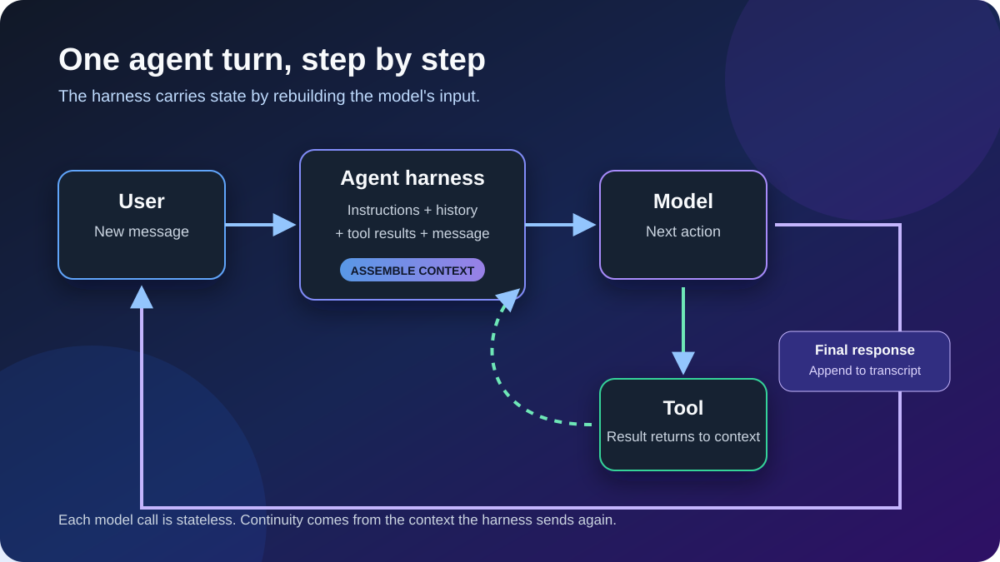

Agent architecture · Context engineering
How a turn works in an agent harness
Why the model is stateless, why context grows, where input and output tokens go, and what changes when the harness compacts a long conversation.

An AI agent can feel as if it is following one continuous train of thought. Underneath, the experience is usually built from a sequence of separate model requests. The agent harness—the software around the model—does the work of turning those requests into a coherent session.
First, what counts as a turn?
A user-visible turn begins when you send a message and ends when the agent gives control back to you. A model call is one request from the harness to the model. They are not always the same thing.
A simple question may need one model call. A coding task may need several: the model asks to read a file, the harness runs that tool, the tool result is added to the context, and the model is called again. All of that can happen inside one turn from your perspective.
A typical turn
- You send a new message.
- The harness gathers its instructions, relevant conversation history, available tool definitions, tool results, and your message.
- It serializes that material into the input for a model request.
- The model returns either a final response or an intermediate action such as a tool call.
- If a tool is requested, the harness runs it, appends the result, and calls the model again.
- The final response is stored in the transcript so it can be included in a future turn.
Stateless model, stateful experience
In the common request-response design, the model does not retain a private copy of your previous turn that it can recall automatically on the next call. Each call is evaluated from the input supplied for that call. If the old conversation is absent, the model cannot rely on it.
The harness creates the appearance of memory by storing session state outside the model and sending the useful parts again. That state might live in process memory, a local session file, a database, or a provider-managed conversation object. Even when an API lets the client reference a conversation by ID, the effective context still has to be made available to the model by the surrounding system.
What gets sent as input?
The exact envelope varies, but an agent request commonly includes some combination of:
- system and developer instructions that define behavior;
- workspace or project instructions;
- the conversation transcript or a compacted version of it;
- tool descriptions and schemas;
- tool calls and their returned results;
- retrieved files, search results, images, or other task context; and
- your newest message.
The context is therefore larger than the text visible in the chat. A short message such as “continue” can sit on top of thousands of tokens of instructions, history, and tool output.
Why the token count grows
Tokens are the units the model processes. Input tokens are in the request sent to the model. Output tokens are generated by the model for that request. Once an output is saved into the transcript, it can become part of the input on later calls.
Here is a deliberately simplified session. It assumes 800 tokens of fixed instructions and ignores small formatting overheads.
| Turn | What is added | Input | Output | Request total |
|---|---|---|---|---|
| 1 | 100-token user message | 900 | 200 | 1,100 |
| 2 | 120-token user message | 1,220 | 180 | 1,400 |
| 3 | 100-token user message | 1,500 | 220 | 1,720 |
Turn 2 has 1,220 input tokens: 800 fixed instructions, the earlier 100-token message, the earlier 200-token answer, and the new 120-token message. Turn 3 carries those items plus the 180-token answer and its new message. Across all three requests, the model processes 3,620 input tokens and generates 600 output tokens—a cumulative 4,220 tokens.
This is why session usage can grow faster than the visible size of the newest message. It is also why “output tokens” should not be read as a permanently separate bucket: they are output now, but may be input later.
Tool loops add more model calls
Suppose the model responds by asking the harness to search the repository. That tool-call response uses output tokens. The harness then sends another request containing the previous context, the tool call, and the search result. The result consumes input tokens, and the model’s next response consumes output tokens again.
Large command output, file contents, or search results can therefore increase a turn’s token usage substantially. Well-designed harnesses limit noisy results, select only relevant files, and avoid repeatedly injecting material the model no longer needs.
Caching can change cost and latency
Resending context does not always mean that every repeated token is processed or billed identically. Some providers can recognize a stable prompt prefix and apply prompt caching, reducing latency or price for the cached portion. The request still has a logical input length, but usage reports may separate cached from uncached input.
Caching rules, retention periods, eligibility, and prices vary. It is safer to distinguish three ideas: the number of tokens in the effective context, the number newly processed, and the amount ultimately billed.
The context window is finite
Every model has a maximum context window shared by the request input and the output it must still generate. As a session grows, the harness cannot keep adding history forever. Before the limit is reached, it must drop low-value material, retrieve only what is relevant, start a fresh context, or compact the existing conversation.
What compaction does
Compaction replaces a larger portion of older context with a smaller representation. A harness might summarize earlier messages, preserve important decisions in structured state, remove redundant tool output, or combine these techniques. The fixed instructions and recent working context usually remain separate from the compacted history.
For example, if 500 tokens of old conversation are replaced by a 160-token summary, the next request can be 340 tokens smaller than it otherwise would have been. Future turns grow again from this smaller baseline.
A useful summary preserves
- the user’s goal and constraints;
- decisions and their rationale;
- work already completed;
- important identifiers and file paths; and
- open questions and next actions.
Compaction may lose
- exact wording and subtle preferences;
- details judged unimportant at the time;
- fine-grained tool output; and
- connections that were never made explicit.
Compaction does not give the model a larger memory. It trades detail for space. That is why durable requirements belong in clear instructions or structured project files rather than being mentioned once and left deep in a long transcript.
The whole picture
An agent session is best understood as a loop: the harness reconstructs context, the model chooses the next action, tools may add new evidence, and the resulting transcript becomes raw material for the next request. Input grows because history is carried forward. Output contributes both to the current request’s usage and to future input. Compaction periodically shortens that history so useful work can continue inside a finite window.
Once you see the loop, agent behavior becomes easier to reason about. Context is not invisible memory—it is a resource the harness assembles, spends, and eventually compresses.